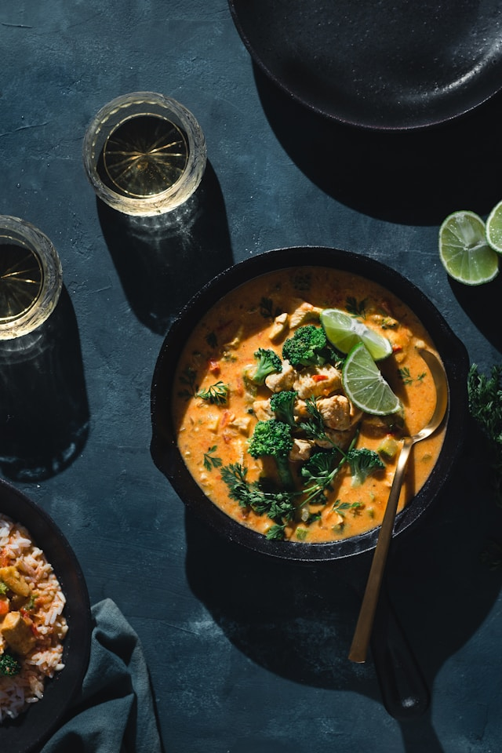

Yellow Thai Curry

An aromatic, coconut-milk based stew featuring a vibrant curry paste. Made from fresh herbs, chilies, and spices.
Ingredients
- Curry Ingredients
- 1/2 large onion , chopped
- 1 pound boneless skinless chicken breasts , cut into bite-sized pieces
- 2 medium gold potatoes , cubed
- 1 large carrot , thinly sliced
- 3-4 Tablespoons yellow curry paste
- 2 teaspoons freshly grated ginger
- 2 cloves garlic
- 27 ounces coconut milk
- 2 teaspoons cornstarch
- 1 Tablespoon lime juice
- 1.5 tablespoons brown sugar
Directions
- Heat the oil in a large pot over medium low heat. Add the onion and saute for a few minutes until softened. Add the chicken, carrots, potatoes and cook for a minute or two. Add ginger, garlic and curry paste and saute for 3 minutes
- Add 1 ½ cans of coconut milk to the pot. Stir cornstarch into remaining ½ can of coconut milk and add to the pot.
- Bring to a boil. Reduce heat and simmer for 20-30 minutes or until the chicken and potatoes are cooked through. Adjust the thickness of the curry by adding more water to thin, if needed.
- Stir in the brown sugar and lime juice. Simmer 5 more minutes.
- Serve with any type of rice (white, brown, and jasmine).